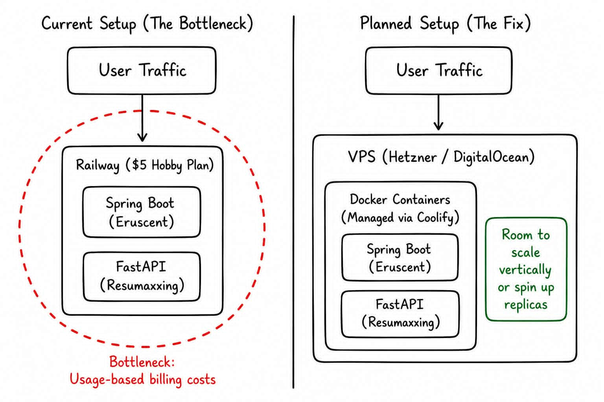

The Economics of Infrastructure: Why Managed PaaS Crushes Student Budgets

Eruscent and ResuMaxxing are live, but I realized this week that real traffic would completely crush our budget. The catch? The code isn't the problem.
Spring Boot and FastAPI can handle concurrent load just fine. The bottleneck isn't the architecture — it's the economics.
Railway's Hobby plan can scale to meet real traffic, but it uses usage-based billing, so you pay per unit of CPU, RAM, and egress. My monthly bill would spike right along with my traffic.
Down the Infrastructure Rabbit Hole
That realization sent me down an infrastructure rabbit hole. I'm sharing what I learned, not as a "here's a tutorial," but as "here's my current understanding, feel free to correct me":
The Scaling Realization
The part that clicked for me: you don't just pick one over the other based on preference. You look at what is actually bottlenecked. Server maxed out with room left in the container? Scale vertically. Need redundancy so one crash doesn't take the whole app down? Scale horizontally.
Closing Reflection
As a 3rd-year Computer Engineering student, I'm trying to build the habit of catching problems before they hit production rather than after. But I also know premature optimization is a trap.
Senior engineers: am I overengineering this by moving to a VPS now, or is it the right move to secure predictable infrastructure costs before real traffic hits?